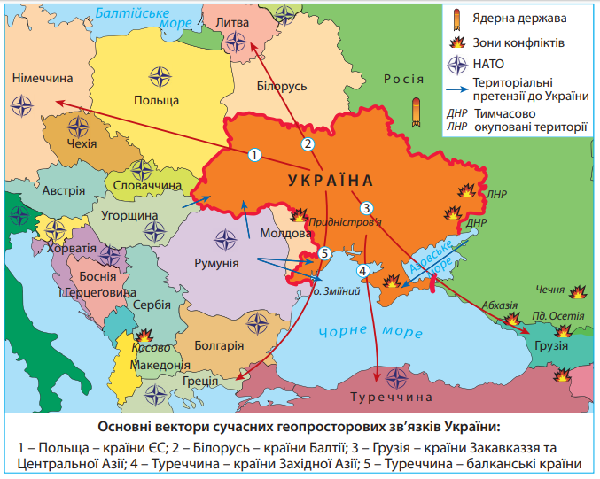

Українська держава
Характерні риси Української держави закріплено в розділі І її Конституції. Україна є суверенна і
незалежна,
демократична, соціальна, правова держава (ст. 1). Поняття «суверенна» полягає в тому, що вона є
самостійною у вирішенні
своїх внутрішніх справ, у зовнішніх відносинах є рівною серед рівних, не порушуючи при цьому прав і
законних інтересів
інших держав, а також загальновизнаних норм міжнародного права.
Україна є унітарною державою, територіальні складники якої не мають ознак державності:
власного
громадянства,
відособленої системи законодавства, своїх державних символів тощо. Територія України в межах існуючого
кордону є
цілісною і недоторканною (ст. 2). Україна є республікою (ст. 5) парламентсько-президентського типу.
Державна влада в
Україні здійснюється на засадах її поділу на законодавчу, виконавчу та судову (ст. 6). Державною мовою в
Україні є
українська. В Україні гарантується вільний розвиток, використання і захист російської, інших мов
національних меншин
України (ст. 10). Державними символами України є Державний Прапор України, Державний Герб України і
Державний Гімн
України. Столицею України є місто Київ (ст. 20). Україна є світською державою (ст. 35), церква
відокремлена від держави,
яка однаково ставиться до віруючих різних релігій та конфесій, до невіруючих взагалі. Школа також
відокремлена від
церкви. Кожен має право на свободу світогляду i віросповідання.
Існують й інші, інституційні принципи державного устрою України, що їх закріплено в окремих законах
України, зокрема
«Про державний кордон України», «Про місцеве самоврядування в Україні»
Територія держави Україна
Україна має найбільшу територію серед держав, що повністю розташовані в межах Європи як
частини світу, та
44-ту в світі.
Її площа становить 603,7 тис. км² , тобто 2,6% від площі Європейського регіону (за геосхемою ООН) та
0,44% світової
площі заселеного суходолу. Територія обмежена державним кордоном загальною протяжністю 6 993 км. На
суходільні кордони
припадає 5 638 км.
Державна територія України включає в себе кілька складників. По-перше, це площа суходолу, обмежена
державним кордоном,
включаючи надра (до технічно доступних для геологічного вивчення й освоєння глибин), внутрішні води та
повітряний
простір над країною (атмосфера та прилегла частина космічного простору). По-друге, територіальні води.
Згідно з
Конвенцією ООН з морського права – це акваторія моря, що прилягає до берега в межах 12 морських миль
(22,2 км). Так,
південний кордон України проходить зовнішньою межею українських територіальних вод, тому по морю Україна
межує з
Румунією та Росією.
Непорушність державних кордонів, принцип територіальної цілісності держав,
невтручання в їхні внутрішні
справи, мирне
врегулювання суперечок було закріплено Гельсінськими угодами – документом, що був підписаний главами 35
держав Європи,
Азії та Америки у столиці Фінляндії в 1975 р. Це означає визнання державних кордонів іншими країнами,
тобто відсутність
територіальних претензій та неможливість їхнього перетину без узгодження з даною країною.
Окрім того, поняття «територія України» охоплює військові та невійськові кораблі, приписані до портів
України, які
перебувають під прапором України в відкритому морі, територіальних водах або портах інших країн, а також
іноземні
невійськові судна, що перебувають у територіальних водах або портах України. Крім того, територією нашої
держави
вважаються військові та невійськові повітряні судна України, що приписані до аеропортів на її території
і перебувають
поза межами держави у відкритому повітряному просторі під розпізнавальним знаком України.
Виокремлюють також об’єкти, що не є територією України, але на які поширюються юрисдикція та сфера
застосування
законодавства України. Це континентальний шельф та морська економічна зона. Відповідно до Закону України
1995 р. про
Морську економічну зону вона розташована в Чорному морі. Її розмежування відбулося згідно з укладанням
міждержавних
угод. До подібних об’єктів належать також підводні телеграфні кабелі та трубопроводи, що проходять по
дну відкритого
моря, антарктична станція «Академік Вернадський» в Антарктиді, запущені Україною космічні об’єкти,
території
дипломатичних представництв і консульських установ України за кордоном, автомобілі послів під прапором
України тощо.
Політико-географічне положення України: глобальне, регіональне, сусідське
Політико-географічне положення (ПГП) – це розташування країни щодо її політичних союзників
і недругів,
військових
блоків, осередків міжнародної нестабільності, регіональних конфліктів.
Його розглядають на глобальному, регіональному та сусідському рівнях. Глобальне політико-географічне
положення країни
визначається ступенем впливу на неї світових осередків високої політичної активності. У цьому сенсі
виокремлюють три
впливові полюси світової політики: США, країни ЄС, Росію. Зростає роль Китаю як світового лідера.
Україна розташована
водночас у Центральній та Східній частинах Європи, що визначає її геополітичне положення між двома
світовими центрами
політичного впливу – країнами Європейського Союзу, з одного боку, та Росією, з іншого. Наша держава
наближена до т. зв.
європейських столиць, де розміщуються центральні органи ЄС та НАТО: Брюсселя та Страсбурга. Водночас
Україна віддалена
від позаєвропейських центрів світової політики й економіки – Вашингтона й Токіо.
На території України перетинаються основні геополітичні осі Євразії, що уможливлює контакти як із
Західною й Північною
Європою, так і з країнами Близького й Середньою Сходу, Центральної Азії. На заході територія країни
безпосередньо
прилягає до європейських держав, які входять до ЄС.
Регіональне політико-географічне положення – це геопросторове положення країни відносно країн і
регіональних організацій
регіону (або суміжних регіонів). Україна географічно розташована в центральній частині Європи й завжди
зазнавала впливу
європейських історичних подій. Країни Західної, Північної та Південної Європи за післявоєнні роки
сформувалися в сталу
політичну єдність, до якої в останні десятиліття долучаються країни Східної Європи. Найбільш потужним
регіональним
лідером у Європі є Німеччина. Україна розміщена на перетині основних геополітичних осей Європи та Азії:
Росія – Чорне
море – Туреччина (на межі Європи й Азії) та Польща – Україна – Туреччина (Балто-Чорноморська вісь).
Основні вектори
сучасних геопросторових зв’язків України: Польща – країни ЄС; Білорусь – країни Балтії; Грузія – країни
Закавказзя та
Центральної Азії; Туреччина – країни Західної Азії; Туреччина – балканські країни.

Оцінюючи геопросторове положення, визначають сусідське політико-географічне положення країн відносно
країн, що
безпосередньо межують із даною країною або її морською економічною зоною. У держави з кожним окремим
сусідом складається
своя система відносин, що має свою історію. Державні кордони при цьому виконують або бар’єрну, або
контактну функцію.
Політична оцінка державного кордону України
За кількістю сусідів першого порядку серед країн Європи Україна поступається лише Німеччині. Особливо
важливі для нашої
держави добросусідські зв’язки з Польщею, яка забезпечує вихід до ЄС, та Туреччиною, через яку існує
вихід до Світового
океану. Недемарковані східні кордони країни найбільш небезпечні для потоків контрабандних товарів,
нелегальних мігрантів
і бандитських угруповань.
Найвпливовішою у політичному аспекті залишається Росія, яка є однією з ядерних держав. Всупереч
міжнародним угодам у
березні 2014 р. Росія анексувала (приєднала в односторонньому порядку) Кримський півострів і місто
Севастополь. Водночас
Росія підтримує терористичні організації на сході України, які у квітні 2014 р. проголосили створення
невизнаних
квазіутворень ДНР та ЛНР. Це створює небезпеку конфліктів на усій території України.
Несприятливим чинником є протяжний спільний кордон з невизнаною державою Придністров’я, яка проголосила
повну
незалежність від Молдови у 1992 р. Після збройного конфлікту туди була введена 14-та армія Росії, що
перебуває там й
донині. Таким чином, сучасний політичний режим у Придністров’ї залишається осередком політичної напруги.
Західні кордони по суходолу узгоджено. Україна межує з країнами-членами військово-політичного блоку НАТО:
Польщею,
Словаччиною, Угорщиною та Румунією. Нині існують проблеми в україно-угорських стосунках через
територіальну
приналежність Закарпаття. Тривалий час Україна заявляла про свій без’ядерний позаблоковий нейтральний
статус. Після
початку російської агресії у Криму та на сході Україна проголосила про намір приєднатися до єдиної
системи оборони НАТО.
Певний час існували спірні територіальні питання України з Румунією щодо приналежності острова Зміїний та
розмежування
чорноморського шельфу. У 1997 р. Румунія підтвердила непорушність кордонів станом на 1961 р., визнавши
право України на
острів Зміїний. Але відкриття на шельфі родовищ нафти та природного газу стало приводом для подання
Румунією позову до
Міжнародного суду ООН в Гаазі про нове розмежування чорноморського шельфу. У 2009 р. позов був
розглянутий: острів
залишився українським, а частина шельфу відійшла до Румунії.
Україна й усі її сусіди є членами ОБСЄ (Організації з питань безпеки і співробітництва в Європі). Вони
зобов’язані брати
участь в урегулюванні політичних та міжнаціональних конфліктів, забезпечувати свободу слова, вести
боротьбу з торгівлею
людьми, проявами нетерпимості різних видів тощо.
Економічна оцінка державного кордону України
Держави-сусіди першого порядку, які мають суміжні з Україною кордони по суходолу на заході (окрім
Молдови) належать до
країн середнього рівня економічного розвитку. Це Польща, Угорщина, Словаччина та Румунія. Вони пройшли
період активного
реформування економіки в 90-х рр. ХХ ст. й нині є членами Європейського Союзу (ЄС). Україна проголосила
стратегічний
курс на вступ до ЄС. Обсяги торгівлі із західними сусідами постійно зростають. Найсуттєвіші експортні
поставки товарів
серед країн ЄС здійснюються до Польщі. Крім того, ця країна є привабливою для українських трудових
мігрантів. Найбільші
імпортні надходження товарів припадають на Польщу та Угорщину. Вигідність сусідського положення нашої
держави
визначається також оптимальною відстанню до багатьох високорозвинутих країн Європи. Окрім ЄС в останні
роки суттєво
збільшується експорт та імпорт товарів і послуг з південним сусідом України – Туреччиною.
Східні та північні сусіди України (Росія та Білорусь), а також Молдова належать до країн з перехідною
економікою, які,
здійснюючи низку реформ, перейшли від планової до ринкової економічної системи. Через військову агресію
з боку Росії
скорочується її частка в економічних зв’язках з нашою державою. Важливе значення в імпорті України
посідає Білорусь.
Україна для Білорусі є третім за значенням економічним партнером.
Реформування адміністративно-територіального устрою України
Адміністративно-територіальний устрій – поділ території на окремі частини – адміністративні одиниці,
залежно від якого
створюються і діють органи державної влади та місцевого самоврядування. Адміністративна одиниця –
частина території
країни, що має місцеве управління.
Систему адміністративно-територіального устрою України (за ст. 132, 133 Конституції України) становлять
одиниці трьох
рівнів:
- вищого – Автономна Республіка Крим (АРК), 24 області, міста Київ та Севастополь зі спеціальним
статусом центрального
підпорядкування;
- середнього – адміністративні райони, міста з районним поділом;
- первинного – міста без поділу на райони, райони у містах, селища, села.
З березня 2014 р. анексовані Росією та мають статус тимчасово окупованих територій Автономна Республіка
Крим та місто
Севастополь. Крім того, з квітня 2014 р. суверенітет України тимчасово не поширюється на частину
територій Донецької та
Луганської областей, зайнятих російськими та проросійськими силами. Верховна Рада України визнала ці
території тимчасово
окупованими 17 березня 2015 р.
За географічними ознаками адміністративно-територіального устрою адміністративні одиниці поділяють на
регіональні
одиниці та населені пункти. До регіональних одиниць належать АРК, області, райони, міста з особливим
статусом. Населені
пункти в Україні поділяють на міста, селища та села. Населені пункти в Україні мають місцеве
самоврядування. Нині в
Україні є 460 міст, 885 селищ та понад 28 300 сіл. У 2015 р. в Україні розпочалася
адміністративно-територіальна
реформа, що полягає в наданні більших повноважень органам місцевого самоврядування (децентралізації) і
зміні
адміністративно-територіального поділу. Відповідно до Закону України «Про добровільне об’єднання
територіальних громад»
замість понад 11 тисяч місцевих рад буде створено 1 500 – 2 000 об’єднаних територіальних громад (ОТГ).
Вони утворюються
внаслідок добровільного об’єднання суміжних територіальних громад сіл, селищ, міст. Об’єднана
територіальна громада,
адміністративним центром якої визначено місто, є міською територіальною громадою; центром якої визначено
селище міського
типу, – селищною; центром якої визначено село, – сільською. Станом на середину 2018 р. а території
України було створено
728 ОТГ, в яких проживає 6,3 млн осіб.